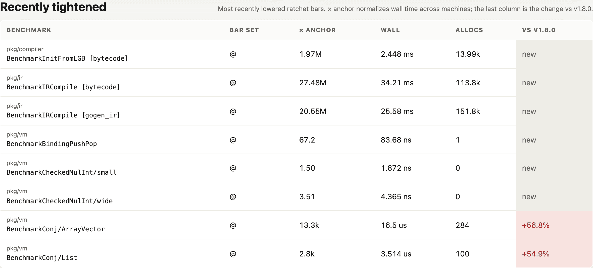
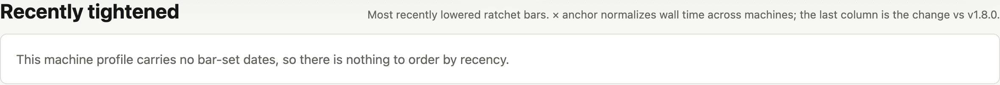
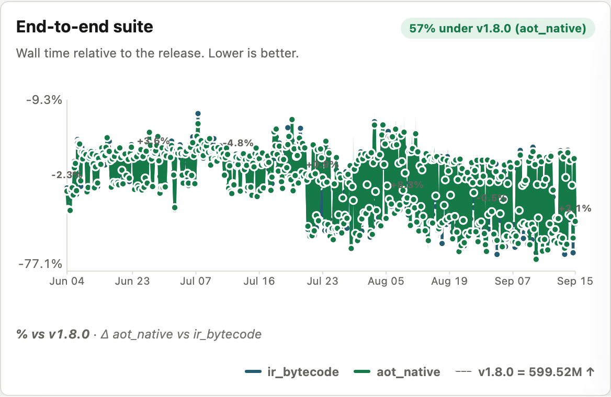
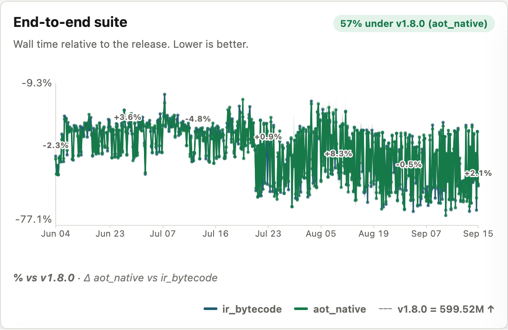
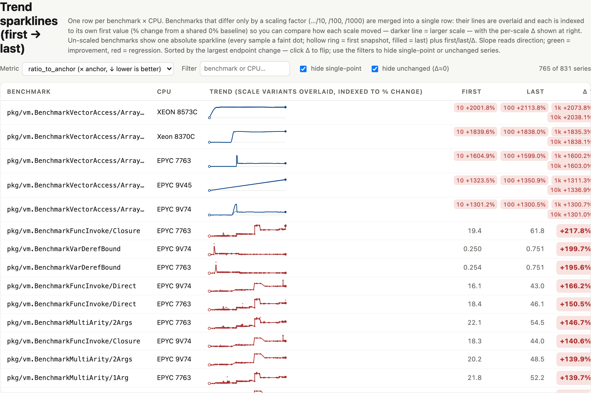
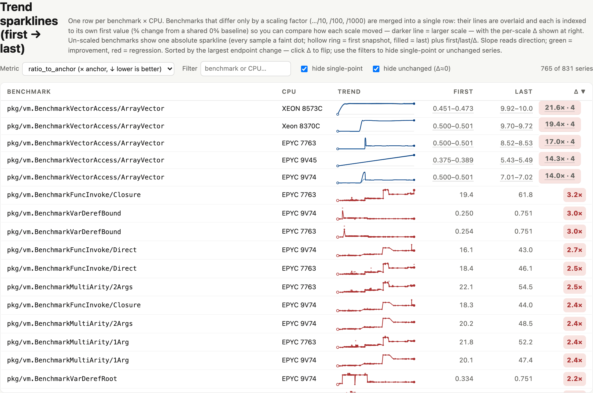
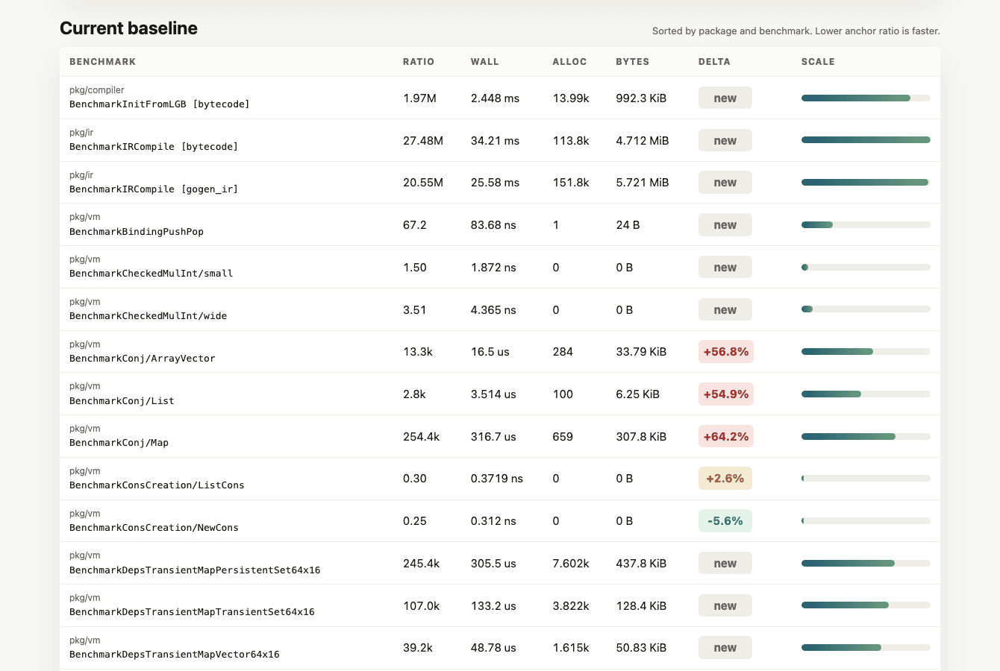
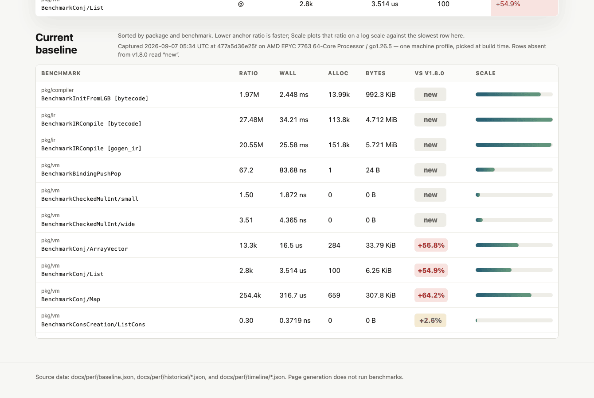

Four PRs split out of #879, one file between them. Each section below says what to open,
where to look, and what to disbelieve. Every preview is built from the same 482 snapshots on
perf-data, so the only difference against the main preview is that PR's diff.
How to use this
Open preview/main in one tab — that is the control.
Open the PR's preview in a second tab and switch between them. The pages are the same length,
so the same scroll position lands on the same section.
The screenshots below are the same two pages, captured at 1340px wide.
#886 “Recently tightened” ordering
The section published the alphabetically first eight benchmarks under a heading that says
“most recently lowered ratchet bars”.
Scroll to Recently tightened, about two thirds down.
On main, read the Bar Set column: every cell is a bare @. That is the
template's date @ sha with both halves empty — the tell that the sort key is missing.
Read the benchmark names downward: InitFromLGB, IRCompile [bytecode],
IRCompile [gogen_ir], BindingPushPop, CheckedMulInt/small…
strictly alphabetical, not chronological.
Six of the eight rows say new in the last column, which is what first looked wrong here —
a row with no history cannot have been recently tightened.

beforeBar Set is a column of bare @; rows are in name order.

afterThe section states why it is empty instead of inventing an order.
The judgement call
On the profile that actually renders, the fix makes the section disappear. That is the honest
outcome — the data is not there — but it trades a populated-looking table for a sentence. Worth
confirming that is the preferred trade before it ships.
Why the data is missing at all is #597:
selectProfile takes the first key in sort order, amd64/ sorts before
arm64/, and arm64/Apple M3 is the only profile of six carrying
best_since_at — 140 of 140, against 0 of 157 on each amd64 profile.
#887 Timeline chart legibility
At 482 snapshots the dots were drawn 6.4 wide in 0.95 units of space, so each one sat
several deep into its neighbours and the ring on each punched holes in the rest.
The Timeline charts at the top — no scrolling needed.
On main, the per-snapshot percentage labels (−9.3%, +4.7%…) sit unreadable inside the mass.
After, they carry a paper halo and read cleanly.
Hover a dot. This is the load-bearing check: the dots carry the date/SHA/value tooltip, so
they have to stay hittable. Sizing purely to spacing gave 0.90, inside the 2.5-wide line, which
made them invisible and unhoverable. The floor is 1.76.
Look at Suite memory and IR compile specifically — those are the two whose lines
read as broken on the published page. They are not broken; the dots were covering them.

beforer=3.2 with a paper ring, at ~0.95 units of spacing.

afterr=1.76, ring dropped, fill at 75%, line thinned to 1.5.
What I am least sure of
1.76 is a floor chosen against the line width, not derived from the data. At 482 snapshots the dots
still overlap — they have to, there is less than a unit each. The question is whether overlap that
reads as density is better than a line with no snapshots marked on it at all.
Noticed and deliberately not fixed: Suite memory draws a legend with two series
and one visible line. Both variants have identical heap bytes per op on this profile, so
ir_bytecode sits exactly under aot_native. The chart is honest; the legend
cannot say so.
#888 Sparkline table readability
Four changes to one table, all about comparing numbers by eye instead of by counting digits.
Scroll to Trend sparklines — the long scrolling table.
Magnitudes. Find the ClojureTestSuiteCompileAndRun rows. Main prints
2,806,110,000 and 13,908,200,000; after they read 2.81B and
13.91B.
Multiples over percents. The Δ column reads 5.0× rather than
+400.3% past a doubling, and stays in percent below it.
Scale families. The VectorAccess/ArrayVector rows show
0.451–0.473 in First and 21.5× · 4 in Δ — a range and a geometric mean
over four scales, where main spread a pill per scale across all three columns.
Hover those three cells. They carry a dotted underline; hovering gives the per-scale
breakdown. A native title was tried first and never appeared — it waits out a hover
delay and does not fire while the pointer moves across a dense table.
Column widths. The header reads Trend, not the old sentence. Measured on the two
previews at 1340 wide: on main the table is 1199px inside a 1178px container, so it
overflows horizontally and 46 of the first 60 benchmark names are truncated.
After, the table is 1178px — no overflow, 0 truncated.

beforeFull digit strings, percent deltas, pills spanning three
columns. The Δ column really is cut off at the right — the table overflows its container here.

afterCompacted magnitudes, × multiples, one summary per column.
Open question21.5× · 4 packs a geometric mean and a count into one cell. Geometric is the right mean
for multipliers — an arithmetic mean follows whichever scale has the largest ratio — but whether the
notation reads without explanation is a taste call.
#889 Section chrome
Heading alignment, baseline provenance, the table cap and the scrollbar.
Alignment. On main the heading and its description are bottom-aligned, so a wrapped heading
pushes its description down to meet the last line. After, both start level at the top.
Provenance. The capture date, SHA, CPU model and Go version now sit on their own line rather
than trailing the description.
Column header.Delta becomes vs v1.8.0, so the comparison names
itself instead of relying on a line at the top of the page.
The cap. The table scrolls inside a 620px region with a sticky header, matching the
sparkline table. On main it runs its full 157 rows.
Also: the Trend sparklines heading drops “(first → last)”.

beforeRuns full length; heading bottom-aligned; column reads “Delta”.

afterCapped at 620px, sticky header, provenance on its own line.
Cannot be checked in a screenshot
The scrollbar is the point of one of these changes and headless Chromium draws overlay
scrollbars regardless, omitting them from captures. It needs a real browser: the track should hold
its space at 14px rather than fading out. No scrollbar-width/scrollbar-color
is set alongside it, because setting either makes Chrome ignore the
::-webkit-scrollbar rules entirely — that is how a first attempt rendered a 2px sliver.
Before merging
Land in order #886 → #887 → #888 → #889, rebasing each on the last. They all touch
cmd/perf-page/main.go, and the repo forbids merge commits.
#879 keeps the CPU filter it is named for; #880 stays stacked on it.
Both remaining pages are light-only — the perf page declares
color-scheme: light with no dark block, so it stays white on a dark desktop. Not
addressed in any of these four.